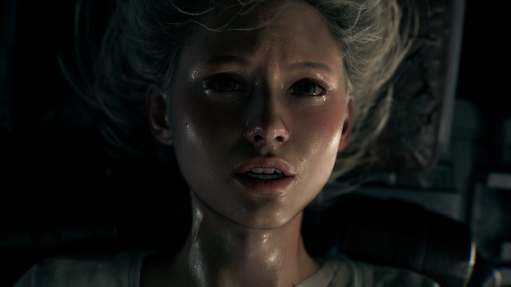
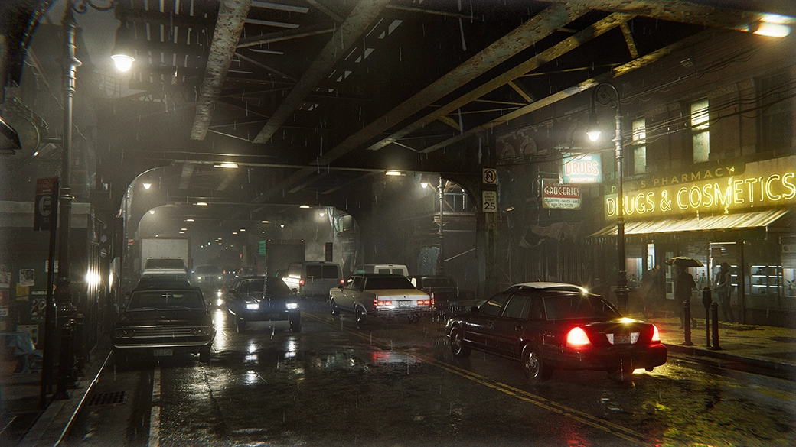

Per il trentesimo anniversario di Resident Evil, Capcom ha deciso di spingersi oltre per il nono capitolo (decimo considerando anche lo Zero; undicesimo considerando Code Veronica) dell'iconica serie di survival horror con Resident Evil Requiem. Dopo 30 anni dall'uscita dell'originale Resident Evil nel 1996 per PS1, la saga del colosso farmaceutico Umbrella Corporation, che ha accompagniato i fan per ben undici capitoli principali e innumerevoli spin-off e film, giunge al termine con un capito che vuole racchiudere in un unico pacchetto tutto quello che la saga è ed è stata per gli ultimi tre decenni, sia in termini di storia che di gioco vero e proprio. Requiem unisce il gameplay classico di Resident Evil e la sua deriva action partita con il quarto capitolo, ma senza mai mischiare le due cose. Infatti il gioco ha due protagonisti: Grace Ashcroft e Leon S. Kennedy, la prima offre sezioni di gioco in pieno stile survival horror, dove ogni munizione e oggetto curativo conta, mentre Leon vuole continuare ciò che ha iniziato in RE4 (in termini di gameplay), proponendo sezioni di gioco action dove le munizioni e le cure saranno l'ultima delle preoccupazioni. Le diverse sezioni di gioco sono ben intrecciate grazie alla storia, senza mai dare troppa priorità a uno o l'altro personaggio. A livello tecnico, Requiem offre una delle migliori esperienze della nona generazione, con ambientazioni stupende e un comparto audio pefetto per un opera Horror.


